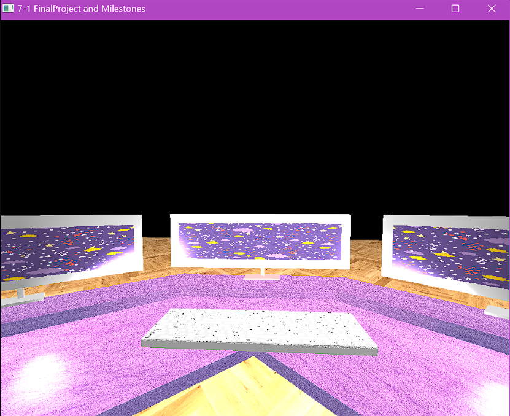
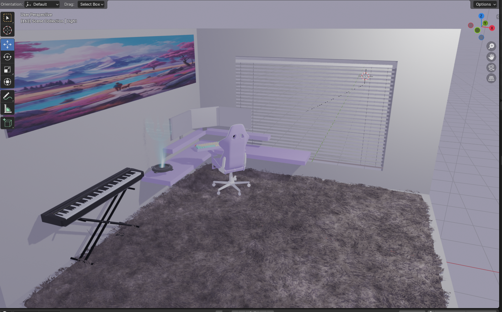

3D Scene Enhancement
An interactive 3D graphics project that began as a C++ and OpenGL recreation of my desk setup and later evolved into a visually enhanced Blender scene with improved materials, lighting, animation, and camera presentation.
Building the same scene from two different perspectives.
This project began as the final assignment for my CS 330: Computational Graphics and Visualization course. I created an interactive 3D scene inspired by my own desk setup, including a lavender corner desk, three monitors, and a keyboard.
The first version was developed in C++ with OpenGL. The goal was not simply to model the scene visually, but to control the rendering, transformations, camera behavior, user input, textures, and lighting directly.
After completing the OpenGL version, I recreated and enhanced the scene in Blender. That second phase allowed me to focus more heavily on realism, material treatment, lighting quality, animation, and composition while building on the visual decisions established in the original implementation.
Reconstructing a familiar physical environment in 3D.
The scene is based on a desk environment rather than an abstract graphics demonstration. This gave the project recognizable spatial relationships and made it easier to evaluate proportion, placement, movement, and lighting.
CORNER DESK
The lavender desk establishes the primary form and layout of the scene.
THREE MONITORS
Multiple displays introduce repeated geometry, orientation, and composition challenges.
KEYBOARD
Smaller scene details help establish scale and create a more complete workstation environment.
VIEWER MOVEMENT
The scene is designed to be explored interactively rather than viewed from only one fixed camera position.
Building the original scene with direct graphics control.
The original version was developed from scratch using C++ and OpenGL. This required direct control over the pieces that a 3D content tool normally abstracts away, including geometry, transformations, shaders, lighting behavior, camera movement, and event-driven input.
Working at this level made the relationship between rendering, transformations, interaction, and the camera much more explicit.
Constructing complex objects from simple primitives.
The OpenGL scene was modeled using primitive geometry rather than importing completed 3D assets. Objects were assembled by combining, positioning, scaling, and orienting shapes such as cubes and cylinders.
This required breaking recognizable real-world objects into simpler forms and then rebuilding those forms through transformations.
VISUAL PROBLEM
Think of a monitor as a finished object.
Think of a desk as one complete model.
Think visually first.
GRAPHICS PROBLEM
Break a monitor into transformable geometric pieces.
Construct the desk from reusable primitive forms.
Think in coordinates, scale, rotation, and hierarchy.
That process strengthened my understanding of how complex visual environments can be composed from relatively simple building blocks.
Turning a rendered scene into an explorable environment.
One of the most important parts of the OpenGL implementation was the interactive camera system. Instead of viewing the model from a single fixed point, the user can move through the environment and control orientation in real time.
Implementing this system directly required handling user input, camera orientation, view transformations, and event polling rather than relying on a built-in scene editor.
Comparing perspective and orthographic views.
The scene supports switching between perspective and orthographic projection during runtime.
PERSPECTIVE
Objects appear smaller as their distance from the camera increases.
This creates a view that more closely resembles normal visual perception.
ORTHOGRAPHIC
Object size remains more consistent regardless of depth.
This provides a flatter technical view of the scene's spatial arrangement.
Being able to switch between them made projection behavior something the user could experience directly rather than only something implemented mathematically.
Using light to communicate depth and material.
The OpenGL version implements multiple components of lighting to create more realistic surface response.
AMBIENT
Provides a baseline amount of illumination throughout the scene so surfaces are not completely black outside direct light.
DIFFUSE
Changes brightness based on a surface's orientation relative to the light source.
SPECULAR
Adds reflective highlights that help surfaces communicate material and shape.
MULTIPLE LIGHTS
Allows different regions of the scene to receive varied visual emphasis.
Lighting was not only decorative. It provided visual feedback about geometry, orientation, and depth within the rendered environment.
Keeping graphics behavior organized as the scene grew.
The project used a modular function structure for concerns such as lighting, input handling, and draw operations.
This separation was important because an interactive graphics program brings together several systems at once: user input, rendering, object transformations, lighting, camera updates, and scene construction.
Organizing those responsibilities into reusable pieces made the implementation easier to reason about and reinforced software-design principles that apply well beyond graphics programming.
From graphics implementation to visual refinement.
After completing the OpenGL assignment, I recreated the scene in Blender to explore how the same concept could be pushed further visually.


Enhancing the concept with a visual production workflow.
Rebuilding the project in Blender changed which parts of the development process required the most attention. OpenGL required direct control over the rendering system; Blender made it possible to spend more time refining the appearance and presentation of the same scene.
UV UNWRAPPING
Surface coordinates were prepared to support more deliberate texture placement.
PASTEL PALETTE
The scene was visually refined around a stylized color direction rather than relying only on basic material treatment.
REFLECTIVE MATERIALS
Material properties were used to create more convincing surface response.
SOFT LIGHTING
Area lights, reflections, and softer shadows improved the visual depth of the scene.
CAMERA PRESENTATION
Camera positioning and movement could be composed more deliberately for presentation.
INTERACTIVE DETAILS
The enhanced concept included additions such as a floating hologram and backlit keyboard.
OpenGL and Blender solved different parts of the problem.
Recreating the scene in Blender did not make the OpenGL version obsolete. The two implementations emphasized different skills and exposed different layers of the graphics process.
OPENGL
Direct rendering control.
C++ application logic.
Manual camera implementation.
Transformation matrices.
Input and event handling.
Lighting calculations.
BLENDER
Visual modeling workflow.
Material refinement.
Advanced scene lighting.
Camera composition.
Animation capabilities.
Higher-fidelity presentation.
Working in both environments gave me a stronger understanding of what 3D tools automate and what must happen beneath those tools to turn data into a rendered image.
Coordinating input, transformations, and rendering in real time.
One of the more technically demanding parts of the project was the OpenGL camera system because several pieces of application state had to remain synchronized as the user moved through the environment.
That work gave me practical experience with view matrices, field of view behavior, event polling, and the relationship between user interaction and the graphics pipeline.
Understanding 3D systems from both the code and visual sides.
The camera controls were one of the most rewarding parts of the project because they connected mathematical graphics concepts with a very immediate user experience.
A change to a matrix or input calculation was not abstract; it directly affected how natural or frustrating it felt to move through the environment.
The Blender enhancement then provided a different lesson. Once the lower-level graphics systems were no longer the primary concern, decisions about materials, visual hierarchy, light, color, and composition became much more prominent.
A project that grew beyond its original course requirements.
The final project demonstrates both the original engineering work required to create an interactive 3D scene and the later visual iteration used to enhance that concept.
More than anything, the project shows my ability to iterate on an existing technical implementation, adopt a new tool when it provides meaningful advantages, and carry lessons from software engineering into interactive and visual development.